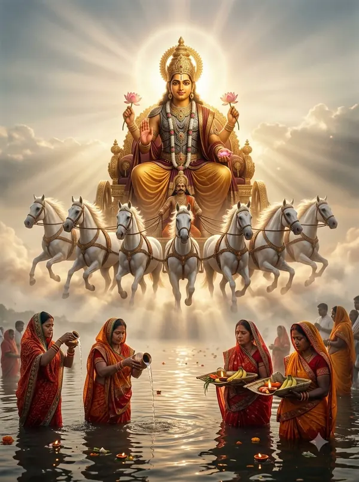

आज का चौघड़िया — भुवनेश्वर
आज 18 अक्टूबर 2026, रविवार को भुवनेश्वर में सूर्योदय सुबह 5:42 और सूर्यास्त शाम 5:20 है। दिन का सबसे शुभ चौघड़िया लाभ (सुबह 8:37–सुबह 10:04), अमृत (सुबह 10:04–सुबह 11:31), शुभ (दोपहर 12:59–दोपहर 2:26) है। राहु काल दोपहर 3:53 – शाम 5:20 तक रहेगा।

| चौघड़िया | समय | फल |
|---|---|---|
| उद्वेग | सुबह 5:42 – सुबह 7:09 | अशुभ |
| चर | सुबह 7:09 – सुबह 8:37 | सामान्य — यात्रा के लिए अच्छा |
| लाभ | सुबह 8:37 – सुबह 10:04 | शुभ — व्यापार/लाभ |
| अमृत | सुबह 10:04 – सुबह 11:31 | सबसे शुभ |
| काल | सुबह 11:31 – दोपहर 12:59 | अशुभ |
| शुभ | दोपहर 12:59 – दोपहर 2:26 | शुभ |
| रोग | दोपहर 2:26 – दोपहर 3:53 | अशुभ |
| उद्वेग | दोपहर 3:53 – शाम 5:20 | अशुभ |
| चौघड़िया | समय | फल |
|---|---|---|
| शुभ | शाम 5:20 – शाम 6:53 | शुभ |
| अमृत | शाम 6:53 – रात 8:26 | सबसे शुभ |
| चर | रात 8:26 – रात 9:59 | सामान्य — यात्रा के लिए अच्छा |
| रोग | रात 9:59 – रात 11:31 | अशुभ |
| काल | रात 11:31 – रात 1:04 | अशुभ |
| लाभ | रात 1:04 – रात 2:37 | शुभ — व्यापार/लाभ |
| उद्वेग | रात 2:37 – सुबह 4:10 | अशुभ |
| शुभ | सुबह 4:10 – सुबह 5:42 | शुभ |
कल — 19 अक्टूबर 2026, सोमवार
| चौघड़िया | समय | फल |
|---|---|---|
| अमृत | सुबह 5:42 – सुबह 7:10 | सबसे शुभ |
| काल | सुबह 7:10 – सुबह 8:37 | अशुभ |
| शुभ | सुबह 8:37 – सुबह 10:04 | शुभ |
| रोग | सुबह 10:04 – सुबह 11:31 | अशुभ |
| उद्वेग | सुबह 11:31 – दोपहर 12:58 | अशुभ |
| चर | दोपहर 12:58 – दोपहर 2:25 | सामान्य — यात्रा के लिए अच्छा |
| लाभ | दोपहर 2:25 – दोपहर 3:53 | शुभ — व्यापार/लाभ |
| अमृत | दोपहर 3:53 – शाम 5:20 | सबसे शुभ |
| चौघड़िया | समय | फल |
|---|---|---|
| चर | शाम 5:20 – शाम 6:53 | सामान्य — यात्रा के लिए अच्छा |
| रोग | शाम 6:53 – रात 8:25 | अशुभ |
| काल | रात 8:25 – रात 9:58 | अशुभ |
| लाभ | रात 9:58 – रात 11:31 | शुभ — व्यापार/लाभ |
| उद्वेग | रात 11:31 – रात 1:04 | अशुभ |
| शुभ | रात 1:04 – रात 2:37 | शुभ |
| अमृत | रात 2:37 – सुबह 4:10 | सबसे शुभ |
| चर | सुबह 4:10 – सुबह 5:43 | सामान्य — यात्रा के लिए अच्छा |
भुवनेश्वर (Bhubaneswar) के अक्षांश-देशांतर से गणना। यह पेज हर रात 12 बजे अपने-आप अपडेट होता है।
अक्सर पूछे जाने वाले सवाल
आज भुवनेश्वर में शुभ चौघड़िया कब है?
आज 18 अक्टूबर 2026, रविवार को भुवनेश्वर में सूर्योदय सुबह 5:42 और सूर्यास्त शाम 5:20 है। दिन का सबसे शुभ चौघड़िया लाभ (सुबह 8:37–सुबह 10:04), अमृत (सुबह 10:04–सुबह 11:31), शुभ (दोपहर 12:59–दोपहर 2:26) है। राहु काल दोपहर 3:53 – शाम 5:20 तक रहेगा।
चौघड़िया क्या होता है?
दिन (सूर्योदय से सूर्यास्त) और रात (सूर्यास्त से अगले सूर्योदय) को आठ-आठ बराबर भागों में बाँटा जाता है; हर भाग एक चौघड़िया है। अमृत, शुभ और लाभ शुभ हैं, चर सामान्य है, और रोग, काल, उद्वेग अशुभ माने जाते हैं।
चौघड़िया हर शहर में अलग क्यों होता है?
क्योंकि यह स्थानीय सूर्योदय और सूर्यास्त से निकलता है; दिल्ली और मुंबई के सूर्योदय में लगभग आधे घंटे का अंतर होता है।